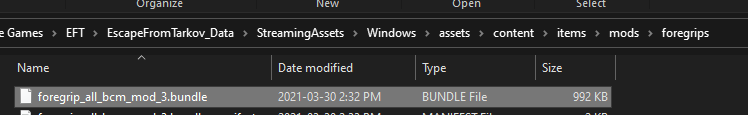

Tarkov assets are already scaled, require no texture work, and are high quality. Below is a guide to exporting them for use in making custom mods.
You will need AssetStudioGUI.
Obtain a copy of EFT, either by buying it or by downloading the free singleplayer mod.
Browse the game files. By default they are installed to
C:\Battlestate Games\EFT(paid version).Next, navigate to
\EFT\EscapeFromTarkov_Data\StreamingAssets\Windows\assets\content\.Search using your OS's file explorer's search function for the item you want, or navigate to it by selecting one of the appropriate folders.
Weapons/contain all weapons found in the game that go pew pew, anditems/contain all other items like attachments, food, water, ammo, and meds.You have found your item, congratulations. For this example, we are using the
foregrip_all_bcm_mod_3.
This
.bundlefile usually contains all assets required. This includes meshes, textures, and audio assets. You may need to perform this action multiple times for missing assets.Open AssetStudioGUI.
Drag and drop your item's
.bundlefile into the main window, then select theAsset Listtab at the top.
Its recommended to click on the
Typecolumn to sort by type.Click on all files that are
LOD0usingctrl + click. These are all of the high resolution textures and meshes.
Right-click, and press
Exported selected assets. Select the folder you want them to be placed at.
All done.